The Lok Sabha election of April–June 2024 — do the numbers add up?
No traces of fraud in the data
Same votes, first past the post — fragmentation decided a third of the seats
182 of 542 seats (33.6%) were decided by vote splitting — a third candidate's votes exceeded the winner's entire margin
263 winners (48.5%) took their seat with less than half the vote; a fully united opposition bloc would have gained 10 seats — and changed no government
What was decided in April–June 2024
General election to the Lok Sabha (543 seats, seven phases from 19 April to 1 June). The BJP won 240 seats with 36.5% of the vote; the Indian National Congress 99 seats with 21.2%. The NDA returned to government with a reduced majority. National turnout: 66.1% — 646 million ballots.
National result — 542 contested constituencies
Surat was won without a poll (unopposed) and has no count. The booth-level recovery covers Uttar Pradesh — 80 constituencies, 12.6% of the national electorate — which is also the state every serious 2024 fraud debate concentrated on.
Same votes, different rules — different results
The fraud check asks whether the count is honest; this section asks what the counting rule itself did to the votes. India elects the Lok Sabha by first past the post — one mark per ballot, highest single tally takes the seat. I re-counted the official results under different rules to measure how much the rule, not the voters, decides. Full analysis: PARADOXES.md.
One seat in three was decided by vote splitting
In 182 of 542 constituencies (33.6%) at least one losing candidate polled more votes than the winner's entire margin — the runner-up would have won by taking only those ballots. The BSP alone was the largest spoiler in 54 seats. Extreme case: Attingal (Kerala), won by 684 votes with the third candidate at 311,779.
Nearly half the winners lack a majority
263 winners (48.5%) took their seat with less than half the vote — in Uttar Pradesh, the combined opposition outpolled the BJP in 18 of its 33 seats there. Above 50% the frustrated-majority paradox is provably impossible; below it, a plurality count cannot tell.
Unite the blocs — 12 seats move, no government changes
Pooling every vote the INDIA bloc received into one candidate per seat adds 10 seats (NDA 292 → 285 — still a governing majority); a fully united NDA adds 2. The two blocs' votes split nearly evenly — 282.7M vs 264.8M — yet the seats split 292 : 233.
Rule 1 · First past the post — a plurality, not a majority
India's rule needs no majority: the single highest tally wins the seat, however split the field. Three elections under the same rule show how far from half the mandate can sit:
| Election | Median winner share | Winners above 50% | Winners below 50% | Spoiler-decided seats |
|---|---|---|---|---|
| 2014 | 47.2% | 206 (37.9%) | 337 (62.1%) | 239 — 44.0% |
| 2019 | 52.8% | 354 (65.3%) | 188 (34.7%) | 128 — 23.6% |
| 2024 | 50.1% | 279 (51.5%) | 263 (48.5%) | 182 — 33.6% |
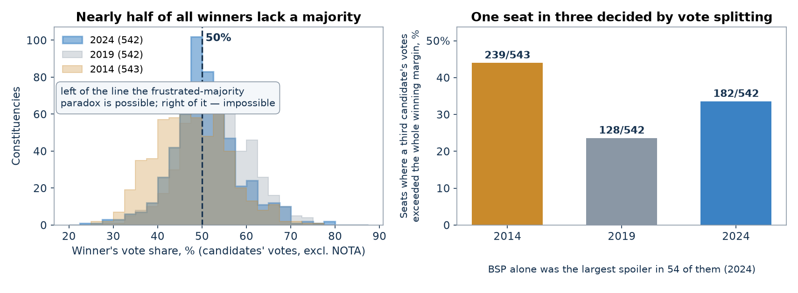
Rule 2 · One bloc, one candidate (the unity counterfactual)
What would party unity have been worth? Pool every vote a bloc's members received in a seat into a single candidate — the rival bloc stays exactly as split as it actually was, third parties keep their votes:
| Bloc | Votes | Seats — actual | If INDIA unites | If NDA unites |
|---|---|---|---|---|
| NDA | 282.7M | 292 | 285 | 294 |
| INDIA | 264.8M | 233 | 243 | 231 |
| others | — | 17 | 14 | 17 |
Rule 3 · Where the spoiler votes sit — Uttar Pradesh, booth by booth
“The BSP's votes would have gone to the SP” is the assumption behind every unity counterfactual. The recovered Form 20 counts (68 of 80 UP constituencies, ~1,300–1,700 stations each) make it checkable as geography: correlate the spoiler's booth-level share with the runner-up's and with the winner's. Both correlations are negative by construction — shares compete for the same 100% — so the informative quantity is the asymmetry between them.
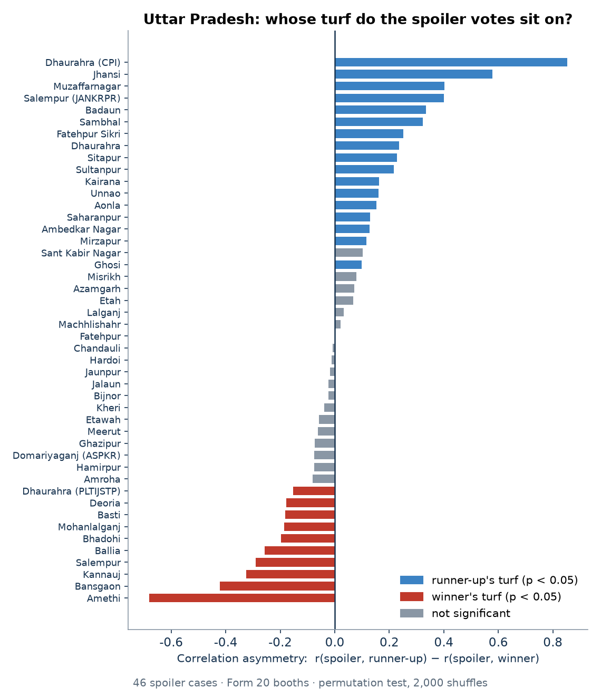
Manipulation detection test results
Seven families of tests used by election statisticians worldwide, run with open-source code on the official ECI constituency export and the recovered Form 20 booth tables — every level India publishes. Summary: all clean at the available levels.
✓
Anomalous-vote estimate (Shpilkin method)
Beyond the honest-decline boundary: zero votes for the leader — nationally and in UP. Recounting without the anomaly zone moves nothing.
What it checks: the Shpilkin method models the honest bell curve of turnout and measures the votes beyond its decline. The boundary (87.6%) is not fitted to 2024: it is the 99.5th percentile of the 2014 election's elector-weighted turnout. To its right stand zero constituencies and zero votes; the “result without the anomalous zone” (36.73%) differs from the observed one (36.50%) only because there is nothing to remove. In Uttar Pradesh's 81 assembly segments with published electors: boundary 82.8% (from UP-2014), tail zero.
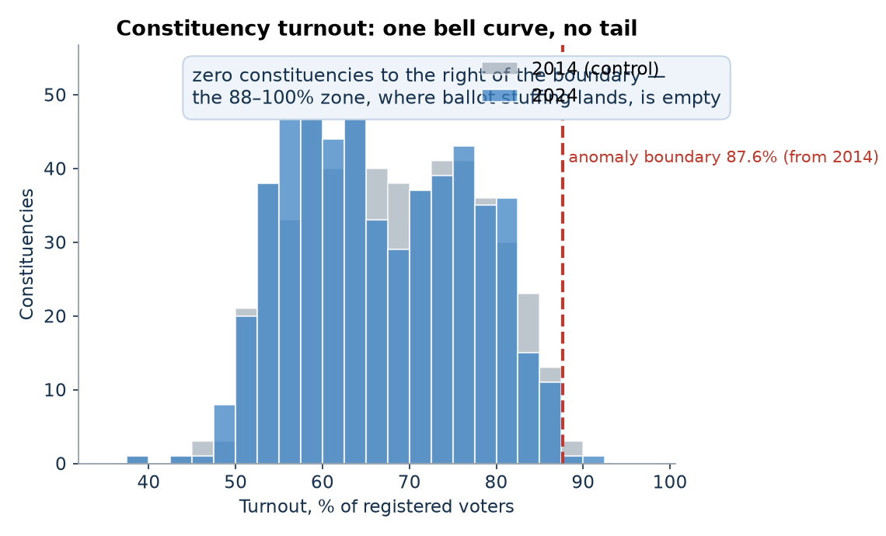
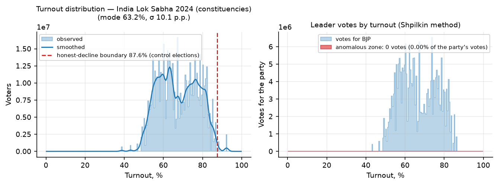
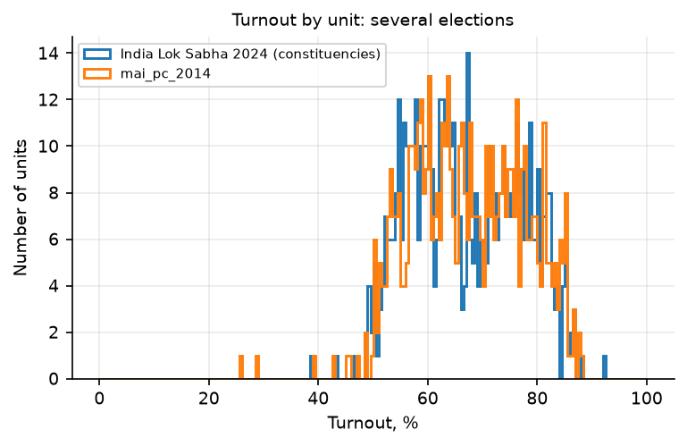
✓
Turnout × result scatter and fingerprints
No “comet tail”, no separated second cluster in the 2D fingerprint — the structure that appears is geography and alliance arithmetic.
What it checks: in a manipulated count the turnout × result cloud stretches up-right — high-turnout units carry a sharply higher leader share. Here BJP's correlation with turnout is negative (−0.12 nationally, −0.29 in UP segments). The Klimek fingerprint (2D density of turnout × leader share) finds no separated cluster; the second Gaussian component (weight 0.18) is degenerate — pinned near zero share. The correlations that are positive (AITC +0.38, YSRCP +0.33) belong to regional parties whose strongholds vote more — mirrored between government and opposition, i.e. heterogeneity, not direction.
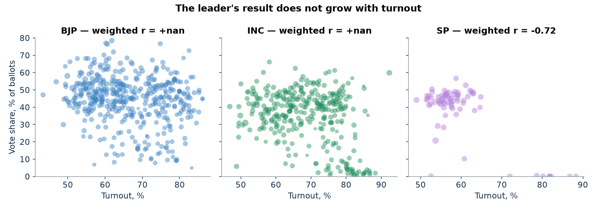
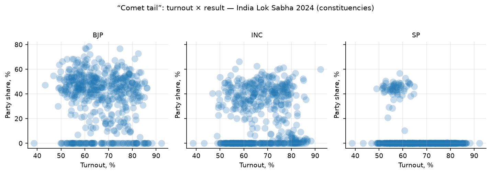
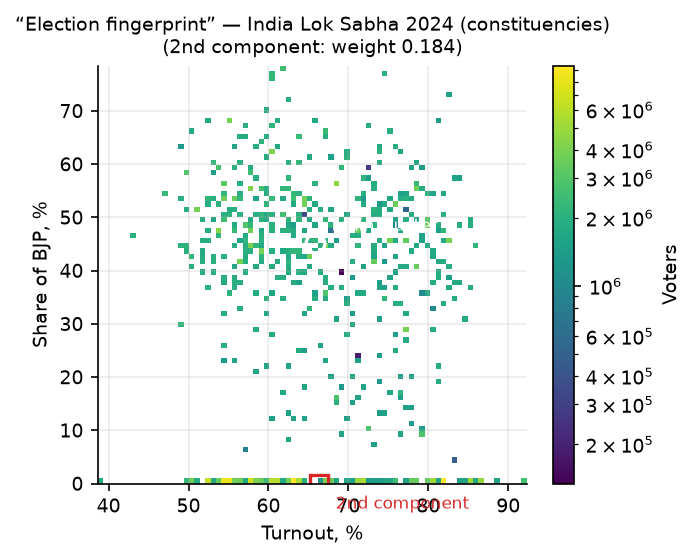
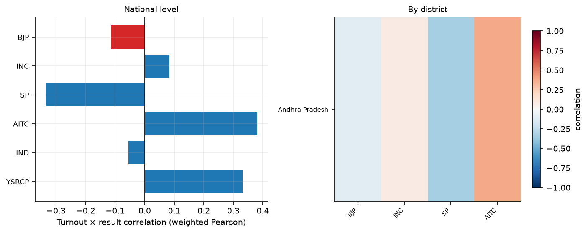
✓
Round-number peaks (Kobak et al.)
No excess of exactly-integer turnouts or leader shares — at the constituency level, and across 105,000 recovered UP stations the integer-share rate is BELOW expectation (z = −3.1).
What it checks: numbers invented at a desk cluster on round values. Among 542 constituencies, 1.11% have exactly integer turnout vs 0.98% expected (z = +0.3) — at ~1.8M electors per unit the test is nearly vacuous, and reported only for completeness. Where the data is fine-grained it is clean too: across the recovered UP stations, 7.85% have an exactly integer BJP share vs 7.95% expected from the binomial null — a deficit, the opposite of the desk-drawn signature. The honest 2014 booth control gives the same picture (turnout peaks 2.02% vs 2.05%, z = −1.1).
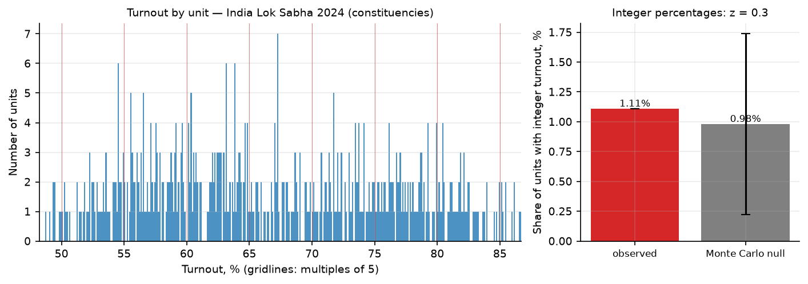
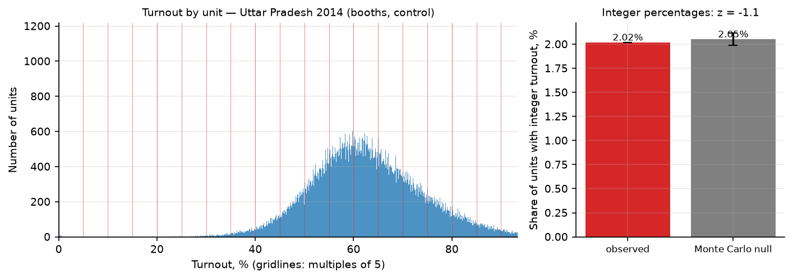
✓
Digit tests (Benford, last digit)
Last digits flat everywhere. The only borderline value — SP's last digit in UP booths (p = 0.03, +0.4 pp on 0s) — is an order of magnitude smaller than invented-number signatures and mirrors 2014's benign profile.
What it checks: fabricated numbers leave fingerprints in the digits. Benford's law on second digits rejects its smooth-count null at booth level (p ≈ 0.002, deviation ≤1.3 pp) — but identically for all four major parties and identically in the honest 2014 control: a stable structural property of UP's booth-size mixture (urban/rural regimes), not a party-specific fabrication trace. Last-digit uniformity — the classic Beber–Scacco test — holds for BJP (p = 0.46), INC (0.25) and BSP (0.06); SP shows the single mildest deviation of this whole analysis (+0.37 pp on trailing 0s, −0.25 pp on 8s; p_mc = 0.027), an order of magnitude below documented fabrication effects. Worth re-checking when the remaining ACs are recovered — not a fraud finding.
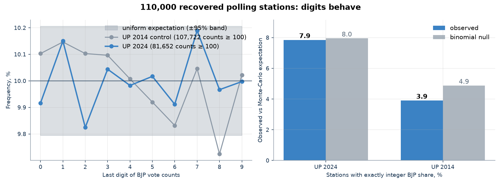
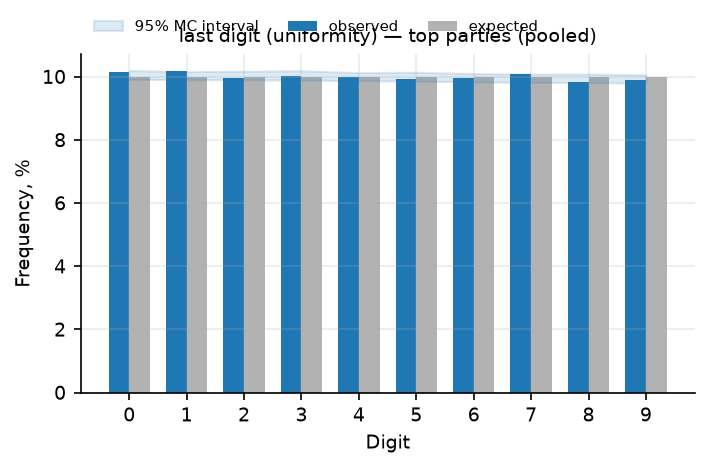
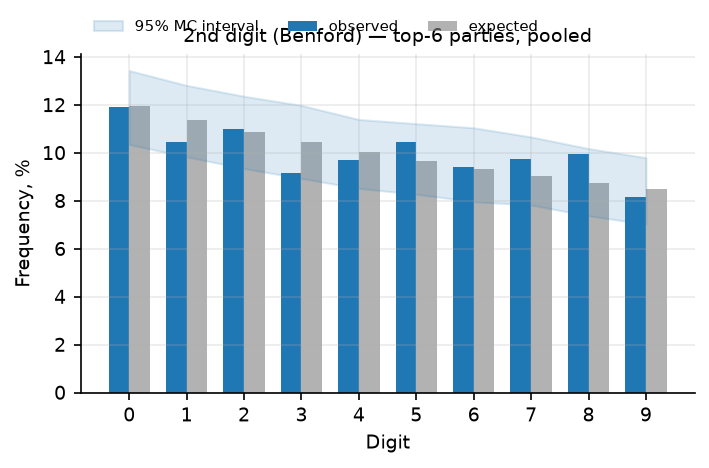
✓
Outliers, machine learning, and the swing vs 2014
19 of 542 constituencies (3.5%) are neighbour-outliers and 6 are ML-anomalies — small and scattered, audit candidates by construction. Not one constituency combines a 15-point turnout jump with a 15-point leader jump against 2014.
What it checks: two independent screens for odd constituencies. Each constituency is a z-score against the median of its own state: 19 exceed |z| > 4 — an ordinary tail, mixed directions, no clustering. 507 constituencies matched by name between 2014 and 2024: zero double-jumps (turnout AND leader share up sharply together), the sharpest cross-election manipulation signature. The Δ-turnout/Δ-share cloud is structureless.
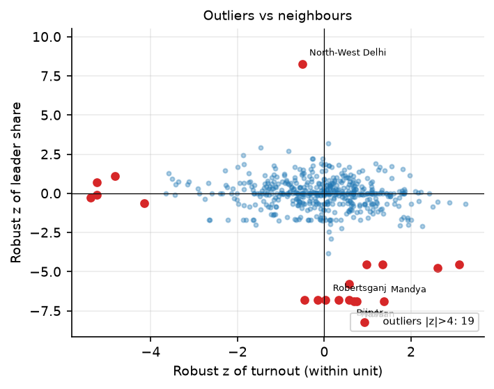
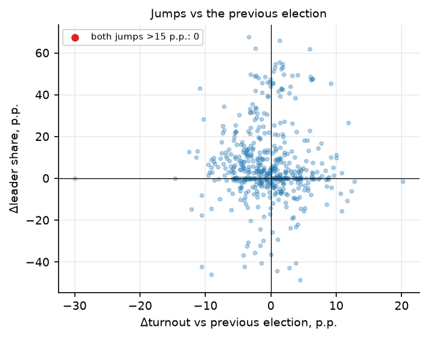
✓
The Form 20 recovery itself: arithmetically exact
1.16 million station-candidate rows parsed under per-row checksums; against the official ECI constituency totals nothing exceeds the official count anywhere, and 11 fully-recovered constituencies match within ±0.5%.
What it checks: the recovery itself. The UP Form 20s are scans and prints scattered across 54 district websites, most of them gone; everything was recovered from the Wayback Machine and a government CDN. Every parsed row must satisfy sum(candidates) = valid and valid + NOTA + rejected = total under exactly one reading of the table layout; rows that fail are withheld, not guessed. Aggregated and compared with the official ECI export: every delta is ≤ 0 — the recovery never counts more votes than the official result — and where the source files are complete the match is within half a percent. Party labels for candidate columns were assigned by matching each constituency's column sums to the official candidate totals (validated <5% deviation wherever station coverage exceeds 90%).
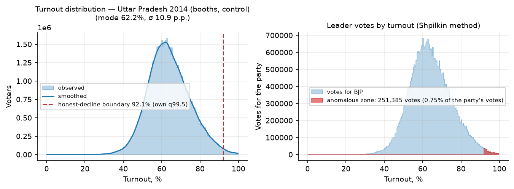
✓
Self-test: the toolkit actually detects fraud
Synthetic stuffing injected into the clean data fires every alarm (anomaly-zone signal from 0 to 17.6M votes; round-number z from 0.4 to 11.8). The “clean” verdict is a measurement, not a blind spot.
What it checks: the toolkit itself — a clean verdict is only meaningful if the tools can fire. Injecting additive stuffing into the 2024 constituencies grows the anomalous-zone estimate from zero to 17.6 million votes and drives the integer-peak statistic from z = 0.4 to 11.8; in the UP assembly segments the signal reaches 0.87M; at 2014 booth level the tail multiplies ×7. On this data the machinery would see millions of stuffed ballots — it sees none.
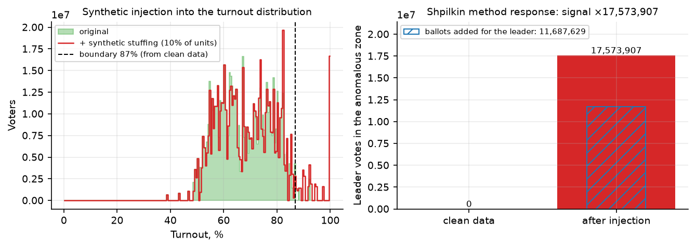
Data
- National results: the Election Commission of India's official constituencywise export (results.eci.gov.in) — 542 constituencies.
- UP booth-level results: 315 Form 20 PDFs from UP district-administration websites, recovered via the Wayback Machine and cdn.s3waas.gov.in — dataset in the repository.
- Control election: ECI 2014 constituency and booth exports.